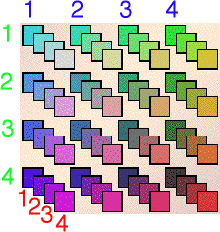

| In our software allowed transitions are represented
by a 4 × 4 × 4 array of squares. |
Think of the rows,
columns, and
faces as labeled 1 through 4.
The face gives the most recent transformation,
the column gives the preceding transformation,
the row gives the transformation before that.
|  |
|
| For example, this array allows all combinations except row = 1,
column = 2, and face = 3. |
| Consequently, the combination 1 → 2 → 3 is forbidden. |
| In the driven IFS, the square with address 321 is empty. Below are the first and fifth generations
of the attractor of the IFS driven with this exclusion. |
|
| Here is an example to illustrate the relation between the
software representation and addresses. |